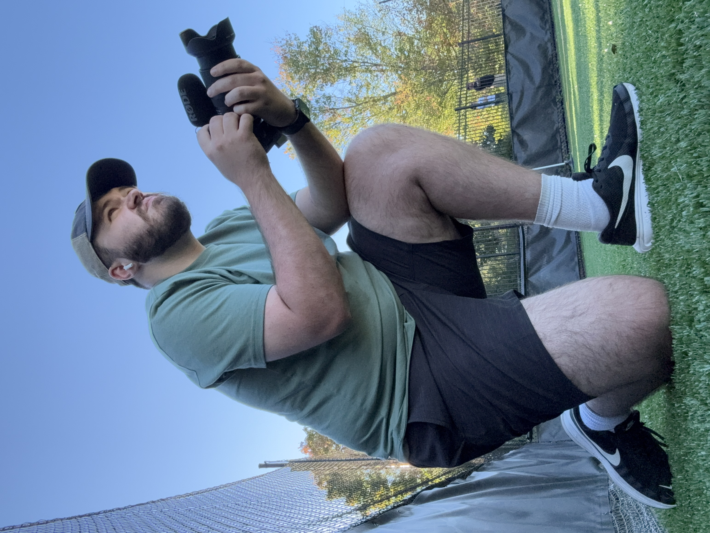

About Me!
My name is Cameron Shaw and I graduated from the University of Kentucky in 2025 with a major in Media Arts and a minor in History. There I spent three years working with UK Athletics and their SEC Network production team During that time, I gained experience across more than 150 live NCAA and SEC broadcasts, working in a variety of production roles including audio, replay, camera, utility, and control room operations. I also had the opportunity to work with different sports, production crews, and broadcast setups while developing a strong foundation in live sports production.
Since graduating, I've continued working in collegiate and professional sports production through freelance opportunities with athletic departments including Virginia Tech, NC State, UNC, Duke, Davidson, and Queens. I've worked across audio, replay, and camera positions on broadcasts for ESPN+, ACC Network/ACCNX, and school-operated platforms. More recently, I've joined the game-day production crew at Lenovo Center, working on in-arena video productions for Carolina Hurricanes games and other events, with opportunities to operate both fixed and handheld cameras as well as replay.
Outside of live broadcast production, I've also gained experience in sports video, digital content, and social media. Through my time as a Creative Video Intern with Kentucky Athletics, I produced and edited promotional content featuring athletic programs and student-athletes. I also worked as a social media content creator with UK Smart Campus, contributing to digital content and the Bowman's Friends podcast. I'm interested in continuing to build on both sides of my experience, combining live event production with opportunities to shoot, edit, and create sports-related content.
You can contact me at CShawMediaOutlook.com.